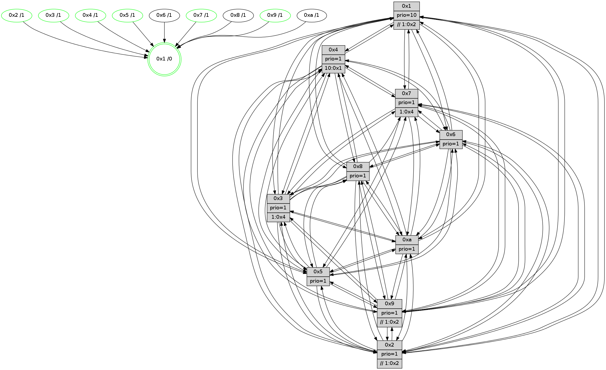

>> << IDX [start] -100 -25 -5 +0 +5 +25 +100 [825.601736069]
 Previous packets
----------------------------------------------------------------------
820.084820 beacon01(faad) #0 coord=01,02,03,04,05,06,07,0a,09,08 cycle=688.0ms assoc
-- color-indic=1 64 c1 a8
820.094802 beacon02(faad) #0 coord=01,02,03,04,05,06,07,0a,09,08 cycle=688.0ms assoc 64 52 99
820.104802 beacon03(faad) #0 coord=01,02,03,04,05,06,07,0a,09,08 cycle=688.0ms assoc 64 28 d4
820.114801 beacon04(faad) #0 coord=01,02,03,04,05,06,07,0a,09,08 cycle=688.0ms assoc 64 5f 3e
820.124804 beacon05(faad) #0 coord=01,02,03,04,05,06,07,0a,09,08 cycle=688.0ms assoc 64 25 73
820.134802 beacon06(faad) #0 coord=01,02,03,04,05,06,07,0a,09,08 cycle=688.0ms assoc 64 ab a4
820.144804 beacon07(faad) #0 coord=01,02,03,04,05,06,07,0a,09,08 cycle=688.0ms assoc 64 d1 e9
820.154807 beacon0a(faad) #0 coord=01,02,03,04,05,06,07,0a,09,08 cycle=688.0ms assoc 64 a0 e2
820.164807 beacon09(faad) #0 coord=01,02,03,04,05,06,07,0a,09,08 cycle=688.0ms assoc 64 2e 35
820.174809 beacon08(faad) #0 coord=01,02,03,04,05,06,07,0a,09,08 cycle=688.0ms assoc 64 54 78
820.185744 [Hello(1): seq=434 sym=4,2,9,5,10,3,8,6,7 sysInfo=coloring-mode-on,ColoringModeRequestCalled stat=4:9,9,2,0/2:5,12,10,9/9:6,2,14,1/5:6,9,4,3/10:2,9,9,8/3:0,13,8,0/8:12,9,10,8/6:2,3,10,7/7:11,1,0,11]
820.189638 [Color(4) seq=143 @0:0 prio=1 >10.@1,1.@2,1.@3,1.@6]
820.191289 [Hello(3): seq=525 sym=1,7,6,2,4,8,9,10,5 sysInfo= stat=1:4,8,14,0/7:5,5,11,5/6:0,0,0,0/2:5,9,14,8/4:14,6,8,5/8:10,3,11,4/9:2,12,15,7/10:5,3,14,7/5:14,9,11,9]
820.194248 [Hello(6): seq=525 sym=2,3,5,4,7,9,8,10,1 sysInfo= stat=2:12,13,8,7/3:12,9,1,7/5:7,9,2,11/4:8,14,13,0/7:0,5,14,3/9:10,11,2,0/8:7,8,15,7/10:7,0,6,7/1:8,8,6,1]
820.196979 [Color(7) seq=144 @0:0 prio=1 >1.@4,1.@6]
820.201832 PARSE ERROR************************
Traceback (most recent call last):
File "PacketAnalysis.py", line 167, in showOperaPacket
structPacket = OperaPacketParse.parsePacket(rawPacket)
File "../../pkg-python/HipSens/Core/OperaPacketParse.py", line 461, in parsePacket
return parseHelloMessage(data)
File "../../pkg-python/HipSens/Core/OperaPacketParse.py", line 125, in parseHelloMessage
struct.unpack("!H",linkList[:2])[0])
error: unpack requires a string argument of length 2
48 34 02 00 02 09 00 02 02 12 04 00 05 00 07 00 06 00 03 00 09 00 08 00 0a 00 01 00 53 04 00 02 00 00 4c 12 4c 70 3b 76 73 4c 60 b1 4a fc 0c f9 6a 49 6b a2 16 6d 4d a4
820.205606 [Color(2) seq=170 @0:0 prio=1 >>1.@2,1.@3,1.@6]
820.213813 [Hello(5): seq=525 sym=7,6,4,3,1,9,8,10,2 sysInfo=hasWarning stat=7:10,5,3,6/6:5,8,2,7/4:7,10,6,5/3:15,9,9,7/1:14,8,11,1/9:0,0,14,0/8:5,0,11,6/10:6,7,7,1/2:4,11,3,0]
820.218552 [Color(5) seq=178 @0:0 prio=1]
----------------------------------------------------------------------
820.872950 beacon01(faad) #0 coord=01,02,03,04,05,06,07,0a,09,08 cycle=688.0ms assoc
-- color-indic=1 64 7d ad
820.882932 beacon02(faad) #0 coord=01,02,03,04,05,06,07,0a,09,08 cycle=688.0ms assoc 64 ee 9c
820.892933 beacon03(faad) #0 coord=01,02,03,04,05,06,07,0a,09,08 cycle=688.0ms assoc 64 94 d1
820.902932 beacon04(faad) #0 coord=01,02,03,04,05,06,07,0a,09,08 cycle=688.0ms assoc 64 e3 3b
820.912933 beacon05(faad) #0 coord=01,02,03,04,05,06,07,0a,09,08 cycle=688.0ms assoc 64 99 76
820.922935 beacon06(faad) #0 coord=01,02,03,04,05,06,07,0a,09,08 cycle=688.0ms assoc 64 17 a1
820.932934 beacon07(faad) #0 coord=01,02,03,04,05,06,07,0a,09,08 cycle=688.0ms assoc 64 6d ec
820.942937 beacon0a(faad) #0 coord=01,02,03,04,05,06,07,0a,09,08 cycle=688.0ms assoc 64 1c e7
820.952938 beacon09(faad) #0 coord=01,02,03,04,05,06,07,0a,09,08 cycle=688.0ms assoc 64 92 30
820.962939 beacon08(faad) #0 coord=01,02,03,04,05,06,07,0a,09,08 cycle=688.0ms assoc 64 e8 7d
820.974398 [Hello(10): seq=458 sym=6,2,3,8,9,5,7,4,1 sysInfo=hasWarning stat=6:8,9,0,3/2:1,10,11,2/3:8,9,9,6/8:0,4,12,8/9:7,9,1,0/5:3,14,1,11/7:9,11,1,5/4:13,3,7,6/1:14,10,11,1]
820.978808 [Color(3) seq=166 @0:0 prio=1 >1.@4,1.@6,1.@7]
820.980561 [Hello(9): seq=469 sym=2,5,3,4,7,6,8,10,1 sysInfo=hasWarning stat=2:10,3,11,0/5:10,15,11,2/3:11,15,10,9/4:5,0,12,6/7:2,12,5,7/6:11,3,15,6/8:7,12,6,1/10:3,1,2,0/1:9,3,11,1]
820.983020 [Hello(8): seq=469 sym=5,2,3,4,7,6,9,10,1 sysInfo=hasWarning stat=5:15,15,2,10/2:10,9,11,2/3:14,6,15,9/4:6,0,14,6/7:6,8,2,9/6:14,9,12,8/9:6,9,0,0/10:2,2,1,0/1:2,9,7,0]
820.986711 [STC(1) #0.93 tree-change,inconsistent-stability,stable,to-color d=0]
820.988653 [Color(1) seq=206 @0:0 prio=10 >>1.@2,1.@3,1.@6]
820.992487 [Hello(7): seq=525 sym=2,3,5,6,4,8,9,10,1 sysInfo=hasWarning stat=2:6,10,6,10/3:5,15,2,9/5:1,12,5,14/6:2,12,4,3/4:7,5,0,0/8:14,8,3,6/9:14,6,4,9/10:4,6,5,8/1:12,12,10,0]
820.996432 [Color(9) seq=174 @0:0 prio=1 >>1.@2,1.@3,1.@6]
821.003219 [Hello(4): seq=525 sym=5,7,6,2,3,9,8,10,1 sysInfo= stat=5:4,3,15,9/7:11,8,1,4/6:1,14,15,8/2:3,2,11,8/3:3,5,11,5/9:3,10,0,3/8:2,7,15,9/10:10,5,3,7/1:5,12,11,1]
----------------------------------------------------------------------
821.661081 beacon01(faad) #0 coord=01,02,03,04,05,06,07,0a,09,08 cycle=688.0ms assoc
-- color-indic=1 64 49 b5
821.671063 beacon02(faad) #0 coord=01,02,03,04,05,06,07,0a,09,08 cycle=688.0ms assoc 64 da 84
821.681063 beacon03(faad) #0 coord=01,02,03,04,05,06,07,0a,09,08 cycle=688.0ms assoc 64 a0 c9
821.691064 beacon04(faad) #0 coord=01,02,03,04,05,06,07,0a,09,08 cycle=688.0ms assoc 64 d7 23
821.701064 beacon05(faad) #0 coord=01,02,03,04,05,06,07,0a,09,08 cycle=688.0ms assoc 64 ad 6e
821.711065 beacon06(faad) #0 coord=01,02,03,04,05,06,07,0a,09,08 cycle=688.0ms assoc 64 23 b9
821.721066 beacon07(faad) #0 coord=01,02,03,04,05,06,07,0a,09,08 cycle=688.0ms assoc 64 59 f4
821.731070 beacon0a(faad) #0 coord=01,02,03,04,05,06,07,0a,09,08 cycle=688.0ms assoc 64 28 ff
821.741068 beacon09(faad) #0 coord=01,02,03,04,05,06,07,0a,09,08 cycle=688.0ms assoc 64 a6 28
821.751068 beacon08(faad) #0 coord=01,02,03,04,05,06,07,0a,09,08 cycle=688.0ms assoc 64 dc 65
821.763276 [STC(10)->1 #0.93 tree-change,inconsistent-stability,to-color d=1]
821.764830 [Hello(6): seq=526 sym=2,3,5,4,7,9,8,10,1 sysInfo= stat=2:13,14,8,7/3:12,10,1,7/5:8,10,2,11/4:9,14,13,0/7:1,6,14,3/9:11,12,2,0/8:8,8,15,7/10:8,0,6,7/1:8,9,7,1]
821.767864 [Color(4) seq=144 @0:0 prio=1 >10.@1,1.@2,1.@3,1.@6]
821.769592 [STC(6)->1 #0.93 tree-change,inconsistent-stability,to-color d=1]
821.773440 [Color(7) seq=145 @0:0 prio=1 >1.@4,1.@6]
821.777108 [STC(8)->1 #0.93 tree-change,inconsistent-stability,to-color d=1]
821.778593 [Hello(1): seq=435 sym=4,2,9,5,10,3,8,6,7 sysInfo=coloring-mode-on,ColoringModeRequestCalled stat=4:10,10,2,0/2:6,13,10,9/9:6,3,14,1/5:7,10,4,3/10:3,9,9,8/3:1,13,8,0/8:12,9,10,8/6:3,3,10,7/7:12,2,0,11]
821.781390 [Hello(5): seq=526 sym=7,6,4,3,1,9,8,10,2 sysInfo=hasWarning stat=7:11,5,3,6/6:5,8,2,7/4:8,11,6,5/3:15,10,9,7/1:15,9,12,1/9:1,1,14,0/8:6,0,11,6/10:7,7,7,1/2:4,11,3,0]
821.784125 [Hello(2): seq=522 sym=4,5,7,6,3,9,8,10,1 sysInfo=hasWarning stat=4:1,8,12,4/5:7,8,11,3/7:13,4,3,7/6:1,11,0,6/3:12,0,10,4/9:10,0,12,0/8:10,4,10,6/10:3,10,11,6/1:14,7,7,1]
821.787285 [STC(2)->1 #0.93 tree-change,inconsistent-stability,stable,to-color d=1]
821.788913 [Color(2) seq=171 @0:0 prio=1 >>1.@2,1.@3,1.@6]
821.791031 [STC(5)->1 #0.93 tree-change,inconsistent-stability,stable,to-color d=1]
821.797120 [STC(3)->1 #0.93 tree-change,inconsistent-stability,stable,to-color d=1]
----------------------------------------------------------------------
822.449214 beacon01(faad) #0 coord=01,02,03,04,05,06,07,0a,09,08 cycle=688.0ms assoc
-- color-indic=1 64 f5 b0
822.459196 beacon02(faad) #0 coord=01,02,03,04,05,06,07,0a,09,08 cycle=688.0ms assoc 64 66 81
822.469197 beacon03(faad) #0 coord=01,02,03,04,05,06,07,0a,09,08 cycle=688.0ms assoc 64 1c cc
822.479196 beacon04(faad) #0 coord=01,02,03,04,05,06,07,0a,09,08 cycle=688.0ms assoc 64 6b 26
822.489196 beacon05(faad) #0 coord=01,02,03,04,05,06,07,0a,09,08 cycle=688.0ms assoc 64 11 6b
822.499197 beacon06(faad) #0 coord=01,02,03,04,05,06,07,0a,09,08 cycle=688.0ms assoc 64 9f bc
822.509198 beacon07(faad) #0 coord=01,02,03,04,05,06,07,0a,09,08 cycle=688.0ms assoc 64 e5 f1
822.519201 beacon0a(faad) #0 coord=01,02,03,04,05,06,07,0a,09,08 cycle=688.0ms assoc 64 94 fa
822.539204 beacon08(faad) #0 coord=01,02,03,04,05,06,07,0a,09,08 cycle=688.0ms assoc 64 60 60
822.554167 [Hello(9): seq=470 sym=2,5,3,4,7,6,8,10,1 sysInfo=hasWarning stat=2:11,4,12,0/5:11,0,12,2/3:11,15,11,9/4:6,1,12,6/7:2,13,5,7/6:12,3,0,6/8:7,12,7,1/10:4,1,3,0/1:10,3,11,1]
822.557719 [Color(3) seq=167 @0:0 prio=1 >1.@4,1.@6,1.@7]
822.559439 [Color(1) seq=207 @0:0 prio=10 >>1.@2,1.@3,1.@6]
822.561851 [Hello(10): seq=459 sym=6,2,3,8,9,5,7,4,1 sysInfo=hasWarning stat=6:9,9,1,3/2:2,11,12,2/3:9,10,10,6/8:1,4,13,8/9:8,10,1,0/5:4,14,2,11/7:10,12,1,5/4:14,4,7,6/1:15,11,12,1]
822.565747 [Hello(7): seq=526 sym=2,3,5,6,4,9,10,1 sysInfo=hasWarning stat=2:7,11,7,10/3:6,15,3,9/5:2,12,6,14/6:3,12,4,3/4:8,5,0,0/9:14,7,4,9/10:4,6,6,8/1:13,12,10,0]
822.571996 [Color(9) seq=175 @0:0 prio=1 >>1.@2,1.@3,1.@6]
----------------------------------------------------------------------
823.237344 beacon01(faad) #0 coord=01,02,03,04,05,06,07,0a,09,08 cycle=688.0ms assoc
-- color-indic=1 64 31 be
823.247325 beacon02(faad) #0 coord=01,02,03,04,05,06,07,0a,09,08 cycle=688.0ms assoc 64 a2 8f
823.257326 beacon03(faad) #0 coord=01,02,03,04,05,06,07,0a,09,08 cycle=688.0ms assoc 64 d8 c2
823.267325 beacon04(faad) #0 coord=01,02,03,04,05,06,07,0a,09,08 cycle=688.0ms assoc 64 af 28
823.277326 beacon05(faad) #0 coord=01,02,03,04,05,06,07,0a,09,08 cycle=688.0ms assoc 64 d5 65
823.287326 beacon06(faad) #0 coord=01,02,03,04,05,06,07,0a,09,08 cycle=688.0ms assoc 64 5b b2
823.297328 beacon07(faad) #0 coord=01,02,03,04,05,06,07,0a,09,08 cycle=688.0ms assoc 64 21 ff
823.307330 beacon0a(faad) #0 coord=01,02,03,04,05,06,07,0a,09,08 cycle=688.0ms assoc 64 50 f4
823.317331 beacon09(faad) #0 coord=01,02,03,04,05,06,07,0a,09,08 cycle=688.0ms assoc 64 de 23
823.327333 beacon08(faad) #0 coord=01,02,03,04,05,06,07,0a,09,08 cycle=688.0ms assoc 64 a4 6e
823.338806 [Hello(6): seq=527 sym=2,3,5,4,7,9,8,10,1 sysInfo= stat=2:14,15,9,7/3:12,11,2,7/5:9,10,3,11/4:9,14,13,0/7:2,7,14,3/9:12,13,2,0/8:9,8,0,7/10:9,0,6,7/1:9,10,7,1]
823.342194 [Hello(3): seq=527 sym=1,7,6,2,4,8,9,10,5 sysInfo= stat=1:4,10,15,0/7:7,6,11,5/6:1,0,0,0/2:6,10,14,8/4:15,6,8,5/8:12,3,11,4/9:3,14,15,7/10:7,3,14,7/5:15,10,11,9]
823.344913 [Hello(2): seq=523 sym=4,5,7,6,3,9,8,10,1 sysInfo=hasWarning stat=4:2,8,12,4/5:7,8,12,3/7:14,4,3,7/6:2,11,0,6/3:12,1,11,4/9:11,1,12,0/8:10,4,10,6/10:4,10,12,6/1:14,8,7,1]
823.347610 [Hello(5): seq=527 sym=7,6,4,3,1,9,8,10,2 sysInfo=hasWarning stat=7:12,5,3,6/6:6,8,2,7/4:9,11,6,5/3:15,11,10,7/1:15,10,12,1/9:2,2,14,0/8:6,0,11,6/10:8,7,8,1/2:4,11,3,0]
823.350382 [Hello(1): seq=436 sym=4,2,9,5,10,3,8,6,7 sysInfo=coloring-mode-on,ColoringModeRequestCalled stat=4:10,10,2,0/2:7,14,11,9/9:6,4,14,1/5:8,10,5,3/10:4,9,9,8/3:2,13,9,0/8:13,9,10,8/6:3,3,10,7/7:13,2,0,11]
823.355227 [Color(4) seq=145 @0:0 prio=1 >10.@1,1.@2,1.@3,1.@6]
823.359689 [Color(7) seq=146 @0:0 prio=1 >1.@4,1.@6]
823.361256 [Color(2) seq=172 @0:0 prio=1 >>1.@2,1.@3,1.@6]
823.366363 [Color(5) seq=180 @0:0 prio=1]
----------------------------------------------------------------------
824.025474 beacon01(faad) #0 coord=01,02,03,04,05,06,07,0a,09,08 cycle=688.0ms assoc
-- color-indic=1 64 8d bb
824.035455 beacon02(faad) #0 coord=01,02,03,04,05,06,07,0a,09,08 cycle=688.0ms assoc 64 1e 8a
824.045457 beacon03(faad) #0 coord=01,02,03,04,05,06,07,0a,09,08 cycle=688.0ms assoc 64 64 c7
824.055456 beacon04(faad) #0 coord=01,02,03,04,05,06,07,0a,09,08 cycle=688.0ms assoc 64 13 2d
824.065457 beacon05(faad) #0 coord=01,02,03,04,05,06,07,0a,09,08 cycle=688.0ms assoc 64 69 60
824.075457 beacon06(faad) #0 coord=01,02,03,04,05,06,07,0a,09,08 cycle=688.0ms assoc 64 e7 b7
824.085457 beacon07(faad) #0 coord=01,02,03,04,05,06,07,0a,09,08 cycle=688.0ms assoc 64 9d fa
824.095463 beacon0a(faad) #0 coord=01,02,03,04,05,06,07,0a,09,08 cycle=688.0ms assoc 64 ec f1
824.105464 beacon09(faad) #0 coord=01,02,03,04,05,06,07,0a,09,08 cycle=688.0ms assoc 64 62 26
824.115462 beacon08(faad) #0 coord=01,02,03,04,05,06,07,0a,09,08 cycle=688.0ms assoc 64 18 6b
824.126966 [Hello(7): seq=527 sym=2,3,5,6,4,9,10,1 sysInfo=hasWarning stat=2:7,12,7,10/3:6,15,3,9/5:2,13,6,14/6:4,12,4,3/4:8,5,0,0/9:14,8,4,9/10:4,6,6,8/1:13,12,10,0]
824.130342 [Color(3) seq=168 @0:0 prio=1 >1.@4,1.@6,1.@7]
824.132584 [Hello(4): seq=527 sym=5,7,6,2,3,9,8,10,1 sysInfo= stat=5:5,5,0,9/7:12,10,1,4/6:3,14,0,8/2:4,4,12,8/3:3,6,12,5/9:4,11,0,3/8:2,7,0,9/10:11,5,4,7/1:6,13,11,1]
824.136151 [Hello(10): seq=460 sym=6,2,3,8,9,5,7,4,1 sysInfo=hasWarning stat=6:10,9,1,3/2:3,12,12,2/3:10,10,10,6/8:1,4,13,8/9:8,11,1,0/5:5,15,2,11/7:11,13,1,5/4:14,5,7,6/1:0,11,12,1]
824.140288 [Hello(8): seq=471 sym=5,2,3,4,7,6,9,10,1 sysInfo=hasWarning stat=5:1,1,3,10/2:12,11,12,2/3:15,7,0,9/4:7,1,14,6/7:8,9,2,9/6:15,9,12,8/9:7,11,0,0/10:3,2,1,0/1:4,11,8,0]
824.143242 [Color(1) seq=208 @0:0 prio=10 >>1.@2,1.@3,1.@6]
824.153617 [Hello(9): seq=471 sym=2,5,3,4,7,6,8,10,1 sysInfo=hasWarning stat=2:12,5,12,0/5:12,1,12,2/3:12,15,11,9/4:6,2,12,6/7:2,14,5,7/6:13,3,0,6/8:7,12,7,1/10:4,1,3,0/1:11,3,11,1]
824.158043 [Color(9) seq=176 @0:0 prio=1 >>1.@2,1.@3,1.@6]
----------------------------------------------------------------------
824.813606 beacon01(faad) #0 coord=01,02,03,04,05,06,07,0a,09,08 cycle=688.0ms assoc
-- color-indic=1 64 59 8e
824.823587 beacon02(faad) #0 coord=01,02,03,04,05,06,07,0a,09,08 cycle=688.0ms assoc 64 ca bf
824.833589 beacon03(faad) #0 coord=01,02,03,04,05,06,07,0a,09,08 cycle=688.0ms assoc 64 b0 f2
824.843588 beacon04(faad) #0 coord=01,02,03,04,05,06,07,0a,09,08 cycle=688.0ms assoc 64 c7 18
824.853587 beacon05(faad) #0 coord=01,02,03,04,05,06,07,0a,09,08 cycle=688.0ms assoc 64 bd 55
824.863589 beacon06(faad) #0 coord=01,02,03,04,05,06,07,0a,09,08 cycle=688.0ms assoc 64 33 82
824.873590 beacon07(faad) #0 coord=01,02,03,04,05,06,07,0a,09,08 cycle=688.0ms assoc 64 49 cf
824.883594 beacon0a(faad) #0 coord=01,02,03,04,05,06,07,0a,09,08 cycle=688.0ms assoc 64 38 c4
824.893596 beacon09(faad) #0 coord=01,02,03,04,05,06,07,0a,09,08 cycle=688.0ms assoc 64 b6 13
824.903594 beacon08(faad) #0 coord=01,02,03,04,05,06,07,0a,09,08 cycle=688.0ms assoc 64 cc 5e
824.915505 [Hello(1): seq=437 sym=4,2,9,5,10,3,8,6,7 sysInfo=coloring-mode-on,ColoringModeRequestCalled stat=4:10,11,2,0/2:7,15,11,9/9:7,5,14,1/5:8,11,5,3/10:4,9,9,8/3:2,13,9,0/8:13,9,10,8/6:3,3,10,7/7:14,3,0,11]
824.919189 [Color(4) seq=146 @0:0 prio=1 >10.@1,1.@2,1.@3,1.@6]
824.922022 [Hello(2): seq=524 sym=4,5,7,6,3,9,8,10,1 sysInfo=hasWarning stat=4:3,8,12,4/5:7,9,12,3/7:15,4,3,7/6:3,11,0,6/3:13,2,11,4/9:12,2,12,0/8:11,4,10,6/10:5,10,12,6/1:14,9,7,1]
824.924918 [Hello(5): seq=528 sym=7,6,4,3,1,9,8,10,2 sysInfo=hasWarning stat=7:13,5,3,6/6:7,8,2,7/4:10,11,6,5/3:0,12,10,7/1:15,11,12,1/9:3,3,14,0/8:7,0,11,6/10:9,7,8,1/2:4,11,3,0]
824.928189 [Color(2) seq=173 @0:0 prio=1 >>1.@2,1.@3,1.@6]
824.931467 [Hello(6): seq=528 sym=2,3,5,4,7,9,8,10,1 sysInfo= stat=2:15,0,9,7/3:13,12,2,7/5:10,11,3,11/4:10,15,13,0/7:3,8,14,3/9:13,14,2,0/8:10,8,0,7/10:10,0,6,7/1:10,11,7,1]
824.934099 [STC(1) #0.94 tree-change,inconsistent-stability,stable,to-color d=0]
824.937303 [Color(5) seq=181 @0:0 prio=1]
824.939755 [Hello(3): seq=528 sym=1,7,6,2,4,8,9,10,5 sysInfo= stat=1:5,11,15,0/7:8,7,11,5/6:1,0,0,0/2:7,11,14,8/4:0,7,8,5/8:13,3,11,4/9:4,15,15,7/10:8,3,14,7/5:0,11,11,9]
824.945517 [Color(7) seq=147 @0:0 prio=1 >1.@4,1.@6]